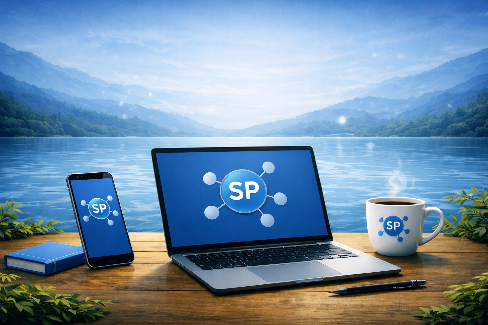
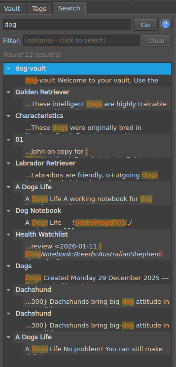
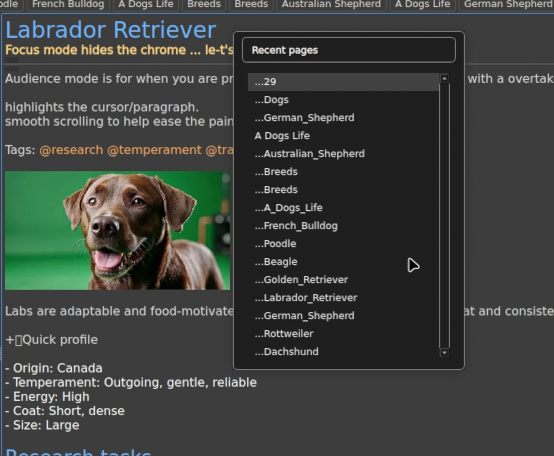
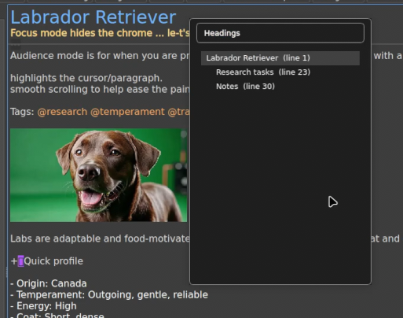
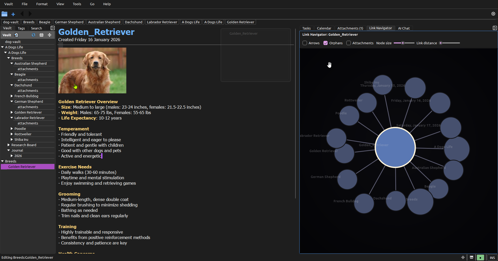
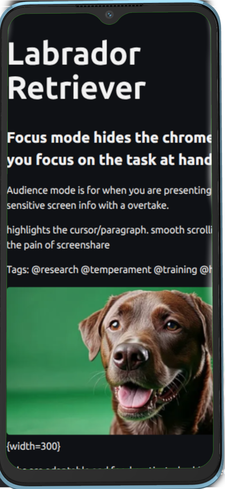

Depth when you want it, calm when you do not.
StillPoint stays simple on the surface while quietly offering the tools power users reach for: fast search, cross-links, graph views, and clean exports.

Power features that stay out of the way.
Blazing local search
Find any note instantly across your files, with no sync delays and no server involved.

Backlinks and references
Jump between related notes, see what links to the current page, and keep context visible without leaving your writing flow.


Homebase sync
Keep your vault local on each device and let Homebase synchronize changes through the server without giving up the filesystem-first workflow.

Mobile PWA
Your notes viewable and editable on the go. No clouds. Just your stuff.

Your notes are plain text. Export or move them anywhere without format lock-in or conversion headaches.
Keyboard-friendly by design.
StillPoint is built for fast capture. Use shortcuts to create new pages, link ideas, and move through your system without touching the mouse.
Power is only useful when it stays invisible until you need it.
Sync across devices and let local tools grow the vault.
Local-first sync
Each device keeps a real local copy of the vault and Homebase synchronizes changes through the server.
Zero-trust direction
The server stores encrypted blobs and sync metadata while your local device remains the place where plaintext work happens.
Conflict awareness
Versioning and conflict detection help you review changes. A diff viewer lets you accept or reject conflicting edits instead of guessing what changed.
Terminal and coding agents
Open the vault in a terminal and let coding agents, scripts, and TUIs create pages directly in the vault using StillPoint's page structure.
Full UI parity
Navigation, links, tasks, and search continue to operate on the local vault model even when Homebase sync is enabled.